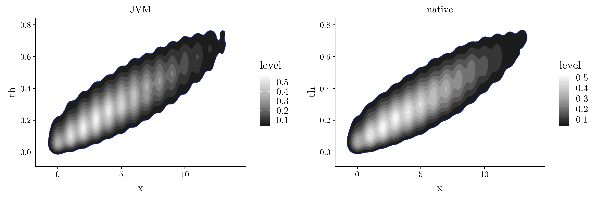

MCMC performance on Substrate VM
Recently I've been following (but not very closely, I admit) the development of the GraalVM project. The project has many interesting goals (such as Project Metropolis, increased JIT performance and others).
However, having dabbled with projects such as Scala native and Kotlin native, one of the aspects of GraalVM that caught my attention was the SubstrateVM, which allegedly allows for a simple, straight-forward compilation of any Java bytecode into a native binary.
I specifically wanted to compare the performance and memory consumption of simple scientific computing tasks when using the JVM and native executables.
To do this, I picked two simple numerical simulations in the form of toy Gibbs samplers, in order to keep the cores busy for a while.
Binomial-Beta case
The first problem chosen was the one of sampling from a Beta-Binomial distribution where we have
\[X \sim \text{Binom}\left(n,\theta\right) \\\\ \theta \sim \text{B}\left(a,b\right). \]
Since we know that
\[\pi\left(\theta|x\right) \propto \theta^x \left(1-\theta\right)^{n-x}\theta^{a-1}\left(1-\theta\right)^{b-1}, \]
We calculate the joint density
\[p(x,\theta) = \begin{pmatrix} n \\\\ x \end{pmatrix} \theta^x \left(1-\theta\right)^{n-x}\frac{\Gamma\left(a+b\right)}{\Gamma(a)\Gamma(b)}\theta^{a-1}\left(1-\theta\right)^{b-1} \]
The marginal distribution is a Binomial-Beta:
\[p\left(x\right)=\begin{pmatrix} n \\\\ x \end{pmatrix}\frac{\Gamma\left(a+b\right)}{\Gamma(a)\Gamma(b)}\frac{\Gamma\left(a+b\right)\Gamma\left(b+n-x\right)}{\Gamma\left(a+b+n\right)},\qquad x=0,1,\cdots,n. \]
The code for this simulation is available here.
The project is setup so that Maven produces an assembly Jar file, since I've found that to be the easier artifact we can offer to the GraalVM's native compiler. To enable assembly Jars we add the maven-assembly-plugin to pom.xml and specify a main class. The assembly can then be produced simply by executing
mvn package
An assembly Jar should be available in the target folder and named benchmark-gibbs-1.0-SNAPSHOT-jar-with-dependencies.jar.
Both the Jar and the native executable allow to specify how many iterations the Gibbs sampler should run for (as well as the thinning factor). If nothing is specified, the default will be used, which is \(50000\) iterations thinned by \(100\).
This particular Gibbs sampler was implemented in two variants. One variant stores the samples draws of \(x\) and \(\theta\) in arrays double[] while the other one simply calculates the Gibbs steps by using the previous value, that is \(x_i=f(x_{i-1},\theta_{i-1})\) and then discarding the previous values. The latter has a constant memory cost in \(\mathcal{O}(1)\) in terms of number of iterations, while the former clearly doesn't.
We can them proceed with the first test, first benchmarking it under the JVM by running (for both sample history variants):
$ /usr/bin/time -v java -jar target/benchmark-gibbs-1.0-SNAPSHOT-jar-with-dependencies.jar store 50000 100 $ /usr/bin/time -v java -jar target/benchmark-gibbs-1.0-SNAPSHOT-jar-with-dependencies.jar nostore 50000 100
(It is important to note that the time command is the executable under /usr/bin and not your shell's builtin.)
The next step is to build the native image using GraalVM's compiler. This is also quite straight-forward and simply a matter of calling:
$GRAALVM_BIN/native-image target/benchmark-gibbs-1.0-SNAPSHOT-jar-with-dependencies.jar
where $GRAALVM_BIN is simply the location where you installed the GraalVM binaries. If the compilation is successful, you should see some information about the compilation steps, such as parsing, inlining, compiling and writing the image. Finally, if using the default, you should have a native executable available in your current directory. Again, the benchmark command is similar to the JVM step, that is:
$ /usr/bin/time -v ./benchmark-gibbs-1.0-SNAPSHOT-jar-with-dependencies store 50000 100 $ /usr/bin/time -v ./benchmark-gibbs-1.0-SNAPSHOT-jar-with-dependencies nostore 50000 100
The results from the runs which saved the sampling history on both platforms (JVM and native) were consistent as we can see from the plots below:

The (peak) memory consumption and execution time for each version is presented in the table below:
| Time(s) | Peak (Mb) | |
|---|---|---|
| JVM (no sample history) | 110.09 | 320.913 |
| native (no sample history) | 130.52 | 273.747 |
| JVM (sample history) | 112.51 | 324.796 |
| native (sample history) | 130.62 | 274.239 |
Another bivariate case
The second problem chosen is another bivariate model, previously detailed in this blog.
The code is included in the same repositoty as the Beta-Binomial case and the setup for the benchmarks is similar. The only step needed to run this example is to change the main class in the assemply plugin section of the pom.xml from BinomialBeta to Bivariate. The benchmark results are in the table below:
| Time(s) | Peak (Mb) | |
|---|---|---|
| JVM | 106.92 | 176.541 |
| native | 121.29 | 273.383 |
Now, in this case, the results are much more interesting. The JVM version outperforms the native version in both execution time and memory consumption. I don't have an explanation for this, but if you think you have (or have any other questions) please let me know on Mastodon or Twitter.
Thanks for reading!